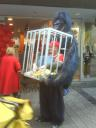
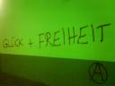
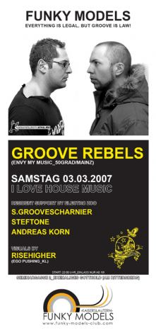

Depeche Mode Party
Im Cotton Club (nähe Kammgarn) ist am Samstag Depeche Mode & ElectroPop Party mit DJ Delle. Beginn ab 22.00 Uhr
Im Cotton Club (nähe Kammgarn) ist am Samstag Depeche Mode & ElectroPop Party mit DJ Delle. Beginn ab 22.00 Uhr
 Ach, noch was: In der Nacht von Samstag auf Sonntag findet zwischen 22.30 und 2.11 Uhr MEZ eine totale Mondfinsternis in Kaiserslautern (und restliches Europa) statt. Dann hoffen wir mal auf eine schöne, klare Nacht!
Ach, noch was: In der Nacht von Samstag auf Sonntag findet zwischen 22.30 und 2.11 Uhr MEZ eine totale Mondfinsternis in Kaiserslautern (und restliches Europa) statt. Dann hoffen wir mal auf eine schöne, klare Nacht!
tolles Bild von NASA
Live im TV: http://www.regensburg-day.de/archives/47
oder Live im Blog: http://npb.jamescook.nu/?p=129
Ok, hier sind sie wieder, die Fundstücke der Woche. Einfach mal durch die Stadt laufen und schon findest man dies:
<<Ist Dance Monkey wieder da?
Glück und Freiheit in KL – und dann noch in Grün – na, das macht doch Hoffung!?>>
Fast hätte ich es vergessen! Der Pfennigbasar findet wieder statt. Läuft zwar schon seit Donnerstag, aber am Samstag von 10:00-14:00 habt ihr noch mal die Chance euch super günstig für den kommenden Sommer, Winterurlaub oder was weiss ich einzurichten.
Der 44. traditionelle Pfennigbasar ist in diesem Jahr in der Industriehalle des Gartenschaugeländes. (freie Zufahrt/Einfahrt Schoenstraße/Ausfahrt Forellenstr. Bushaltestelle Kammgarn, Parkplätze an der Kammgarn und in der Forellenstraße).
http://web2.kaiserslautern.de/service/veranstaltungen/01206/index.html?lang=de&vid=9-2-21-475-483-1642-9
http://www.daifc.de
Der neue Club Funky Models tischt am Samstag unter dem Motto Everything is legal, but Groove ist law mit den Groove Rebels aus MZ/50Grad auf. Support gibt’s von S.Groovescharnier + Steftone + Andreas Korn (all Electro Zoo) sowie Risehigher aus KL.
Start ab 22.00 Uhr,
ehm. Gotthold am Rittersberg (Seminargasse)
Das Feedback zur Eröffnung am letzen Sa. war so unterschiedlich, ich werde Morgen Mal die Lage checken müssen 😉
UPDATE:
Den Gerüchten zu Folge soll die Location aus unbekannten Gründen ins Extrablatt verlegt worden sein!
“La Llama Azul” und Thomas Weitershäuser spielen am Freitag Salsa im Jugendzentrum JUZ, Steinstr.47 in Kaiserslautern. Einlass ist um 20 Uhr, der Eintritt beträgt 6,50 Euro – ermäßigt 5,00 Euro. Quelle: lokalzeitung-kl.de
http://www.la-llama-azul.de
Kompromissloser Blues, Boogie, Shuffle und Swing – überzeugend authentisch und mit grosser Spielfreude dargeboten. Das versprechen Andrew and Crew am Samstag im HardRockCafe Kaiserslautern. “Ein Leckerbissen für alle Freunde des texanischen Blues”.
http://www.andrewandcrew.de/
Gezeigt wurde (nach einer etwas langen Ansprache + Verlosung) mal wieder ein franz. Film: La Tourneuse de pages – Die Umblätterin von Denis Dercourt. Eine junge, talentierte Klavierspielerin wird bei einen Probevorspiel so sehr enttäuscht, dass sie entmutigt das Spielen aufgibt. Jahre später bekommt sie die Chance sich genial subtil bei der Juryhauptperson zu rächen. Ab Mai im Union – anschauen!
http://imdb.com/title/tt0487503/

{kind=link}
{kind=link}
{kind=link}